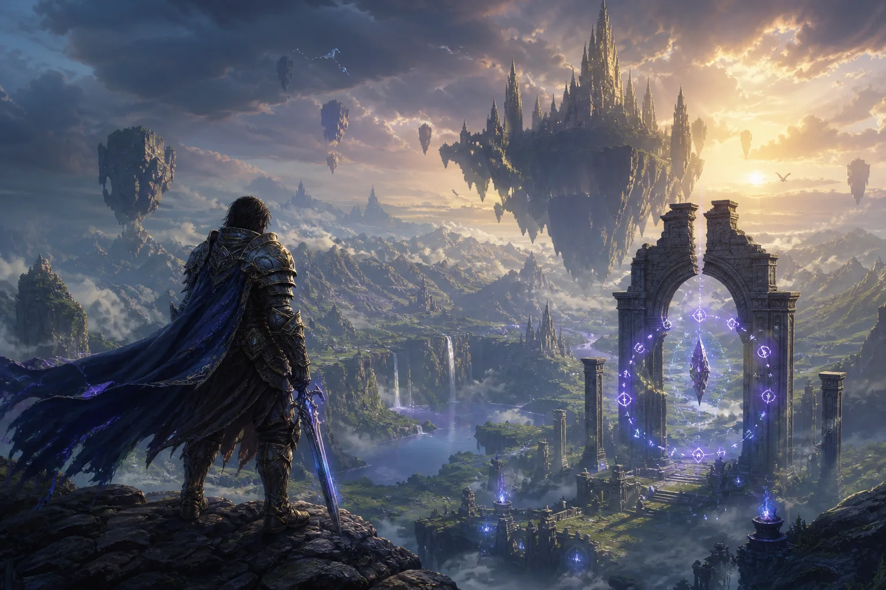
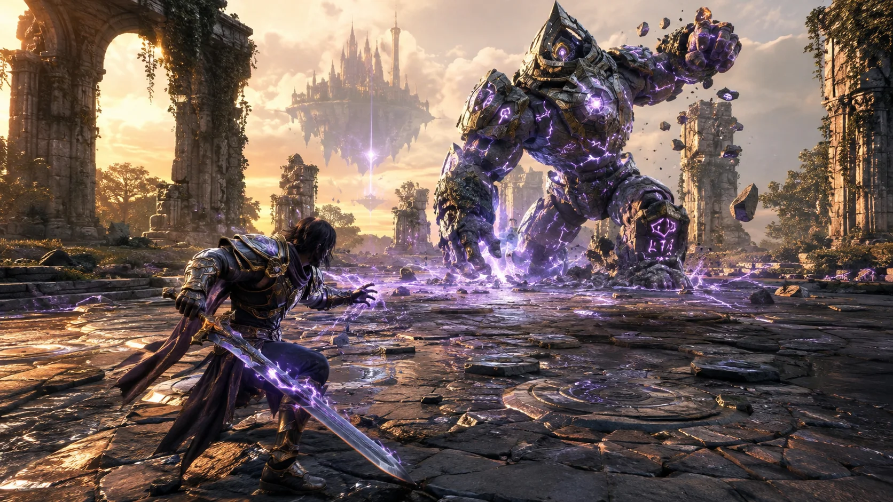

EXPRESSIVE COMBAT
Mix steel, movement, and rune powers to create a fighting style that belongs to you.

Cross a fractured realm shaped by your choices. Every ruin hides a story—and every legend demands a price.
FOLLOW DEVELOPMENTAwaken forgotten powers, explore impossible kingdoms, and decide which ancient stories deserve to survive in a world broken by myth.

Mix steel, movement, and rune powers to create a fighting style that belongs to you.
Explore layered ruins and floating kingdoms built around discovery rather than checklists.
Your alliances reshape regions, characters, and the legends told about your journey.